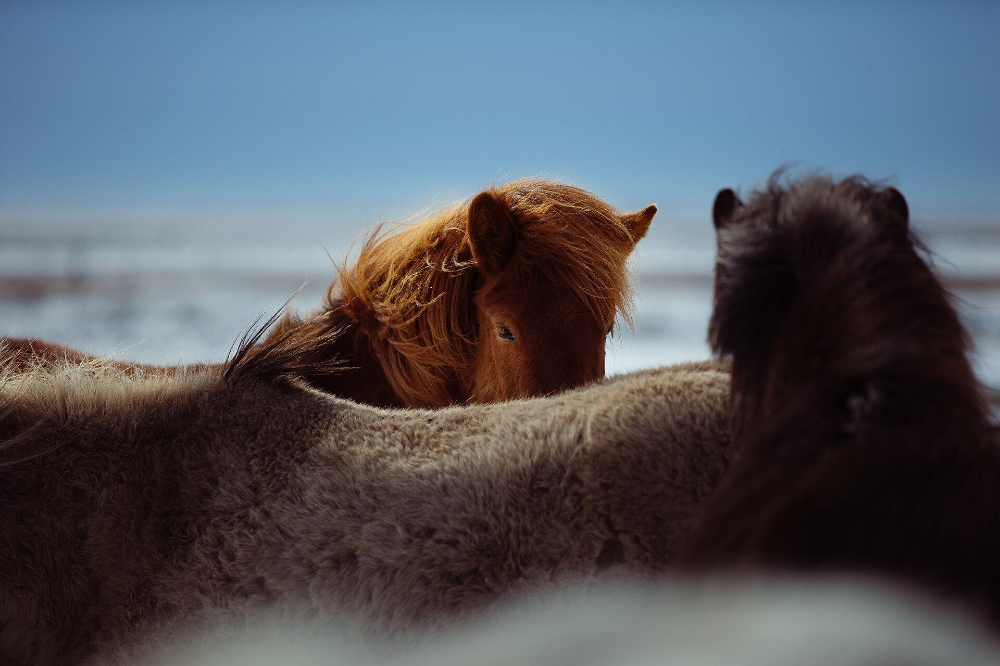

Massage and beyond
What bodywork means here
Equine sports massage works on the muscles. It’s used to ease tension, support recovery from work and help a horse move more freely. It’s a valuable tool, and it’s where my training began.
Bodywork is a wider term. It covers hands-on approaches that work with the whole body: the muscles, the connective tissue around them, and the way a horse holds and protects itself. Working as a body worker lets me choose the right tool for each horse, instead of fitting every horse to one technique.

Technique
Positional release
Positional release is one of the gentlest tools I use. I ease part of your horse’s body into a position where a tight or tender area is shortened and comfortable, then hold it there. With nothing to brace against, the muscle can let go of tension by itself.
Because it never forces tissue to stretch, it suits horses that are sensitive, anxious or too sore for deeper massage. It’s often the first step that makes firmer work possible later in the session.
What a release looks like
Horses show us when they’re letting go. These are the signs I watch for:
- Licking and chewingOften one of the first signs.
- YawningSometimes several big yawns in a row.
- A softer eyeThe eye relaxes and blinking slows.
- Lowering the headThe neck drops and the poll softens.
- A long sighBlowing out slowly through the nose.
- Resting a legShifting weight or resting a hind leg.
Method
Modality stacking
A modality is simply a type of treatment. Stacking means layering several of them in one session, in an order that makes sense for your horse.
A horse that braces against firm pressure might start with positional release. Once that tension eases, deeper massage becomes comfortable and far more useful. No two sessions are put together quite the same way, because no two horses arrive the same way.
Techniques I may draw on
- Equine sports massage
- Positional release
- Myofascial release
- Stretching
- Aromatherapy
How a session is layered
Assess
I watch your horse stand and move, then feel through the body to find where tension and soreness are sitting.
Prepare
Gentle techniques settle your horse and soften areas they’re guarding.
Address
Massage and other hands-on work target what I found, at a depth your horse accepts.
Re-check
I go back over the areas I started with to see what has changed, and adjust before finishing.

Horse-led
Aromatherapy
Horses have a powerful sense of smell, and many respond strongly to scent. I use aromatherapy in a horse-led way. I offer a small number of essential oils, one at a time, and let your horse show me what interests them.
A horse might lean in, breathe the scent deeply, or start to lick and chew. Just as often they turn away, and that’s a clear answer too. Nothing is ever forced on a horse, and oils are never applied neat.
Good to know
- Aromatherapy is always optional. Just tell me if you’d rather I didn’t use it.
- Let me know about any allergies or sensitivities, in your horse or in you.
- If your horse competes under drug-testing rules, tell me your competition dates so we can plan which oils to use and when.
Working alongside your vet
Bodywork complements veterinary care. It doesn’t replace it. I don’t diagnose conditions, and if I find something that concerns me I’ll recommend you speak to your vet.
Depending on where you live, the law may require your vet’s consent before anyone other than a vet treats your horse, so I’ll ask for your vet’s details when you book.

Book a session
Let’s see how your horse is feeling.
Get in touch to arrange a first visit. I travel to yards across [Your Area].